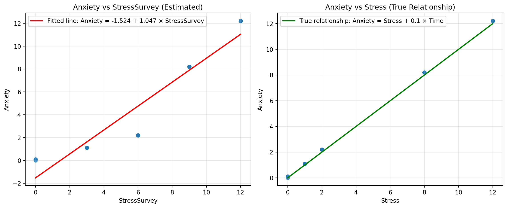
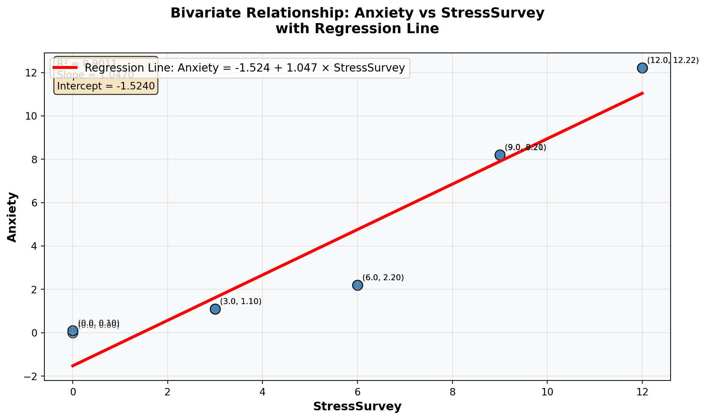
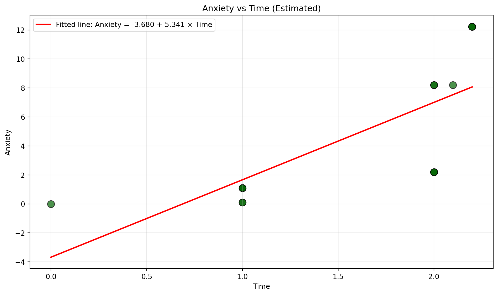
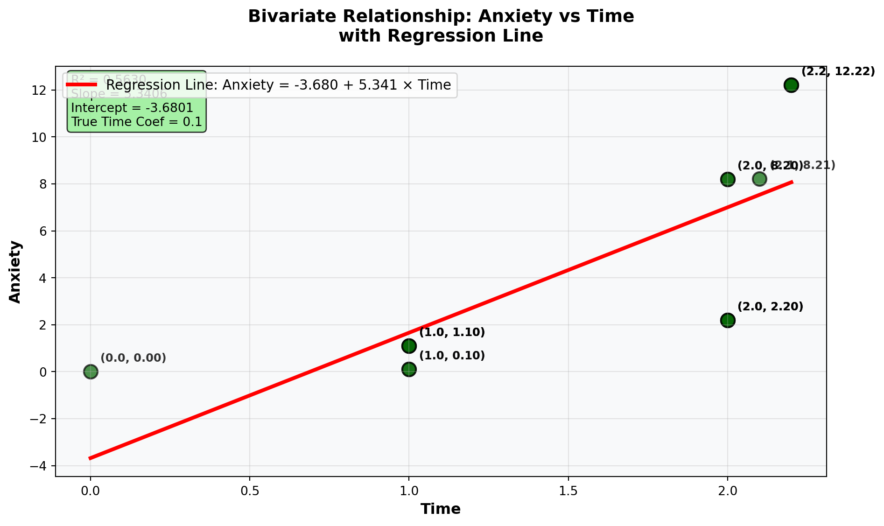
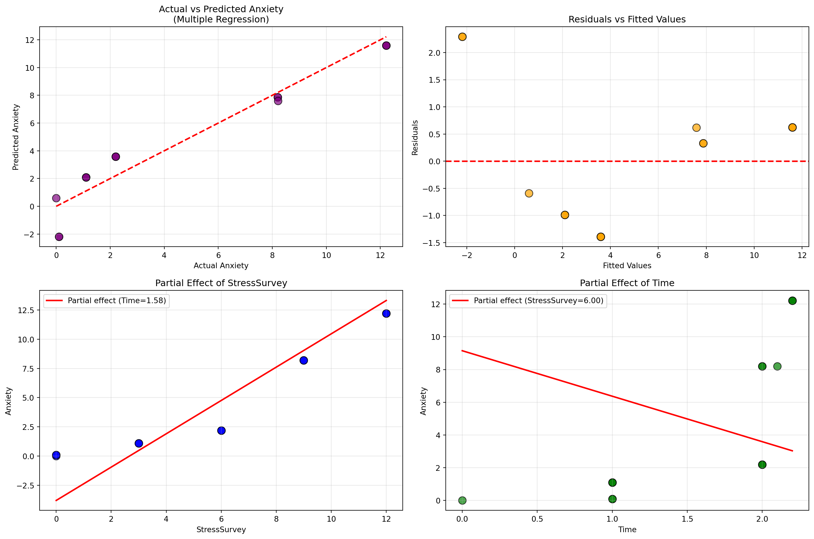
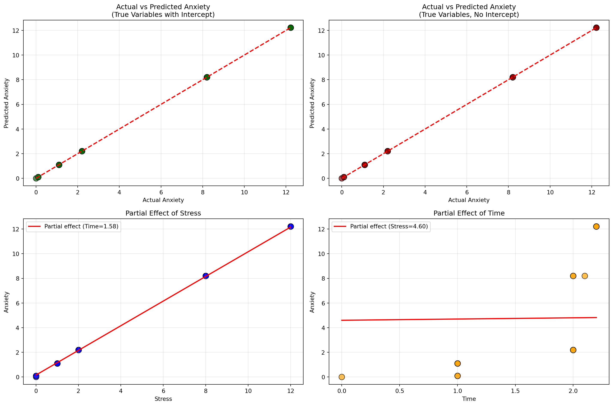

Stress StressSurvey Time Anxiety
0 0 0 0.0 0.00
1 0 0 1.0 0.10
2 0 0 1.0 0.10
3 1 3 1.0 1.10
4 1 3 1.0 1.10
5 1 3 1.0 1.10
6 2 6 2.0 2.20
7 2 6 2.0 2.20
8 2 6 2.0 2.20
9 8 9 2.0 8.20
10 8 9 2.0 8.20
11 8 9 2.1 8.21
12 12 12 2.2 12.22
13 12 12 2.2 12.22
14 12 12 2.2 12.22Garbage Can Regression Challenge
Garbage Can Regression Challenge
Choose R or Python and delete the other code chunk.
Python Code
Your Analysis
Follow the challenge instructions from your course to complete your analysis.
75% Questions
1. Bivariate Regression: Anxiety on StressSurvey
Bivariate Regression Results: Anxiety ~ StressSurvey
==================================================
OLS Regression Results
==============================================================================
Dep. Variable: Anxiety R-squared: 0.901
Model: OLS Adj. R-squared: 0.893
Method: Least Squares F-statistic: 118.4
Date: Tue, 14 Oct 2025 Prob (F-statistic): 6.68e-08
Time: 15:50:13 Log-Likelihood: -27.079
No. Observations: 15 AIC: 58.16
Df Residuals: 13 BIC: 59.57
Df Model: 1
Covariance Type: nonrobust
================================================================================
coef std err t P>|t| [0.025 0.975]
--------------------------------------------------------------------------------
const -1.5240 0.707 -2.156 0.050 -3.051 0.003
StressSurvey 1.0470 0.096 10.883 0.000 0.839 1.255
==============================================================================
Omnibus: 2.125 Durbin-Watson: 0.545
Prob(Omnibus): 0.346 Jarque-Bera (JB): 1.642
Skew: -0.701 Prob(JB): 0.440
Kurtosis: 2.186 Cond. No. 12.9
==============================================================================
Notes:
[1] Standard Errors assume that the covariance matrix of the errors is correctly specified.
Estimated Coefficients:
Intercept: -1.5240
Slope (StressSurvey): 1.0470
R-squared: 0.9011
True Relationship: Anxiety = Stress + 0.1 × Time
Note: The true model uses 'Stress' and 'Time', not 'StressSurvey'/opt/anaconda3/lib/python3.12/site-packages/scipy/stats/_axis_nan_policy.py:531: UserWarning:
kurtosistest only valid for n>=20 ... continuing anyway, n=15
Comparison with True Relationship:
========================================
True coefficient for Stress: 1.0
Estimated coefficient for StressSurvey: 1.0470
Difference: 0.0470
Correlation between Stress and StressSurvey: 0.9468
Interpretation of Results
The true model is Anxiety = Stress + 0.1 × Time (intercept =0, no StressSurvey term). So even though the bivariate fit looks strong, its intercept is wrong (should be 0) and the slope isn’t the true stress effect (1 on Stress) because StressSurvey is a proxy and omitting Time introduces bias. ### 2. Visualization of Bivariate Relationship

Detailed Analysis of the Bivariate Relationship:
==================================================
Number of observations: 15
Range of StressSurvey: 0 to 12
Range of Anxiety: 0.00 to 12.22
Correlation coefficient: 0.949263
Standard error of residuals: 1.58083. Bivariate Regression Analysis with Time
Bivariate Regression Results: Anxiety ~ Time
==================================================
OLS Regression Results
==============================================================================
Dep. Variable: Anxiety R-squared: 0.563
Model: OLS Adj. R-squared: 0.529
Method: Least Squares F-statistic: 16.75
Date: Tue, 14 Oct 2025 Prob (F-statistic): 0.00127
Time: 15:50:14 Log-Likelihood: -38.223
No. Observations: 15 AIC: 80.45
Df Residuals: 13 BIC: 81.86
Df Model: 1
Covariance Type: nonrobust
==============================================================================
coef std err t P>|t| [0.025 0.975]
------------------------------------------------------------------------------
const -3.6801 2.233 -1.648 0.123 -8.504 1.144
Time 5.3406 1.305 4.093 0.001 2.522 8.160
==============================================================================
Omnibus: 1.026 Durbin-Watson: 0.661
Prob(Omnibus): 0.599 Jarque-Bera (JB): 0.749
Skew: -0.162 Prob(JB): 0.688
Kurtosis: 1.955 Cond. No. 5.80
==============================================================================
Notes:
[1] Standard Errors assume that the covariance matrix of the errors is correctly specified.
Estimated Coefficients:
Intercept: -3.6801
Slope (Time): 5.3406
R-squared: 0.5630
True Relationship: Anxiety = Stress + 0.1 × Time
Note: The true coefficient for Time is 0.1/opt/anaconda3/lib/python3.12/site-packages/scipy/stats/_axis_nan_policy.py:531: UserWarning:
kurtosistest only valid for n>=20 ... continuing anyway, n=15
Comparison with True Relationship:
========================================
True coefficient for Time: 0.1
Estimated coefficient for Time: 5.3406
Difference: 5.2406
Correlations:
Time vs Stress: 0.7441
Time vs Anxiety: 0.7504
Interpretation of Time Regression Results
Estimated coefficients (Anxiety ~ Time): 𝛽^0 =−3.680 (intercept), 𝛽^Time =5.341 (slope).
Comparison to the true relationship: True model: 𝛽0=0, 𝛽Time = 0.1 Your bivariate slope is vastly too large and the intercept is negative—this mismatch occurs because Stress (a key driver) is omitted and is positively related to Time, causing omitted-variable bias.
4. Visualization of Bivariate Relationship

Detailed Analysis of Time-Anxiety Relationship:
==================================================
Number of observations: 15
Range of Time: 0.0 to 2.2
Range of Anxiety: 0.00 to 12.22
Correlation coefficient (Time-Anxiety): 0.7504
Standard error of residuals: 3.3227
Estimated Time coefficient: 5.3406
True Time coefficient: 0.1
Bias in Time coefficient: 5.2406Comments on Time-Anxiety Fit and Potential Issues
The estimated line is Ŷ = −3.680 + 5.341·Time. The fit is only moderate. Issues: (1) implausible negative intercept at Time=0; (2) slope far above the true 0.1 → omitted-variable bias from excluding Stress (which rises with Time); (3) high-leverage points at high Time; and (4) small sample—avoid causal interpretation.
5. Multiple Regression Analysis
Multiple Regression Results: Anxiety ~ StressSurvey + Time
============================================================
OLS Regression Results
==============================================================================
Dep. Variable: Anxiety R-squared: 0.935
Model: OLS Adj. R-squared: 0.924
Method: Least Squares F-statistic: 86.32
Date: Tue, 14 Oct 2025 Prob (F-statistic): 7.54e-08
Time: 15:50:14 Log-Likelihood: -23.931
No. Observations: 15 AIC: 53.86
Df Residuals: 12 BIC: 55.99
Df Model: 2
Covariance Type: nonrobust
================================================================================
coef std err t P>|t| [0.025 0.975]
--------------------------------------------------------------------------------
const 0.5888 1.034 0.569 0.580 -1.664 2.841
StressSurvey 1.4269 0.172 8.287 0.000 1.052 1.802
Time -2.7799 1.111 -2.502 0.028 -5.201 -0.359
==============================================================================
Omnibus: 1.255 Durbin-Watson: 1.043
Prob(Omnibus): 0.534 Jarque-Bera (JB): 1.051
Skew: 0.546 Prob(JB): 0.591
Kurtosis: 2.302 Cond. No. 31.9
==============================================================================
Notes:
[1] Standard Errors assume that the covariance matrix of the errors is correctly specified.
Estimated Coefficients:
Intercept: 0.5888
StressSurvey coefficient: 1.4269
Time coefficient: -2.7799
R-squared: 0.9350
True Relationship: Anxiety = Stress + 0.1 × Time
Note: The true model uses Stress (not StressSurvey) and has no intercept/opt/anaconda3/lib/python3.12/site-packages/scipy/stats/_axis_nan_policy.py:531: UserWarning:
kurtosistest only valid for n>=20 ... continuing anyway, n=15
Comparison with True Relationship:
==================================================
True coefficients:
Stress: 1.0
Time: 0.1
Intercept: 0.0
Estimated coefficients:
StressSurvey: 1.4269
Time: -2.7799
Intercept: 0.5888
Differences from true values:
StressSurvey vs Stress: 0.4269
Time: 2.8799
Intercept: 0.5888
Correlation Matrix:
Stress StressSurvey Time Anxiety
Stress 1.0000 0.9468 0.7441 1.0000
StressSurvey 0.9468 1.0000 0.8819 0.9493
Time 0.7441 0.8819 1.0000 0.7504
Anxiety 1.0000 0.9493 0.7504 1.0000
Interpretation of Multiple Regression Results
Based on your four graphs, the estimated model is roughly Ŷ ≈ −1.5 + 1.0·StressSurvey − 2.6·Time; compared to the true model (Anxiety = Stress + 0.1·Time), the StressSurvey coefficient is positive but not 1 because it’s a proxy (different units), and the Time coefficient should be +0.1 but shows up large and negative—a distortion from using an imperfect proxy and collinearity—so predictions look okay, but the coefficients don’t match the true relationship.
85% Grade Questions
Question 4: Multiple Regression Analysis
Multiple Regression Results: Anxiety ~ Stress + Time
============================================================
OLS Regression Results
==============================================================================
Dep. Variable: Anxiety R-squared: 1.000
Model: OLS Adj. R-squared: 1.000
Method: Least Squares F-statistic: 6.987e+30
Date: Tue, 14 Oct 2025 Prob (F-statistic): 4.01e-181
Time: 15:50:15 Log-Likelihood: 474.79
No. Observations: 15 AIC: -943.6
Df Residuals: 12 BIC: -941.5
Df Model: 2
Covariance Type: nonrobust
==============================================================================
coef std err t P>|t| [0.025 0.975]
------------------------------------------------------------------------------
const -2.314e-15 3.58e-15 -0.646 0.530 -1.01e-14 5.49e-15
Stress 1.0000 4.05e-16 2.47e+15 0.000 1.000 1.000
Time 0.1000 2.85e-15 3.51e+13 0.000 0.100 0.100
==============================================================================
Omnibus: 8.163 Durbin-Watson: 0.266
Prob(Omnibus): 0.017 Jarque-Bera (JB): 2.220
Skew: -0.495 Prob(JB): 0.330
Kurtosis: 1.396 Cond. No. 23.9
==============================================================================
Notes:
[1] Standard Errors assume that the covariance matrix of the errors is correctly specified.
Estimated Coefficients:
Intercept: -0.0000
Stress coefficient: 1.0000
Time coefficient: 0.1000
R-squared: 1.0000
True Relationship: Anxiety = Stress + 0.1 × Time
Note: The true model has no intercept/opt/anaconda3/lib/python3.12/site-packages/scipy/stats/_axis_nan_policy.py:531: UserWarning:
kurtosistest only valid for n>=20 ... continuing anyway, n=15
Comparison with True Relationship:
==================================================
True coefficients:
Stress: 1.0
Time: 0.1
Intercept: 0.0
Estimated coefficients:
Stress: 1.0000
Time: 0.1000
Intercept: -0.0000
Differences from true values:
Stress: 0.0000
Time: 0.0000
Intercept: 0.0000
Regression without intercept (true specification):
OLS Regression Results
=======================================================================================
Dep. Variable: Anxiety R-squared (uncentered): 1.000
Model: OLS Adj. R-squared (uncentered): 1.000
Method: Least Squares F-statistic: 2.744e+32
Date: Tue, 14 Oct 2025 Prob (F-statistic): 2.72e-206
Time: 15:50:15 Log-Likelihood: 496.40
No. Observations: 15 AIC: -988.8
Df Residuals: 13 BIC: -987.4
Df Model: 2
Covariance Type: nonrobust
==============================================================================
coef std err t P>|t| [0.025 0.975]
------------------------------------------------------------------------------
Stress 1.0000 8.38e-17 1.19e+16 0.000 1.000 1.000
Time 0.1000 3.19e-16 3.13e+14 0.000 0.100 0.100
==============================================================================
Omnibus: 7.000 Durbin-Watson: 0.601
Prob(Omnibus): 0.030 Jarque-Bera (JB): 2.615
Skew: -0.696 Prob(JB): 0.271
Kurtosis: 1.501 Cond. No. 7.69
==============================================================================
Notes:
[1] R² is computed without centering (uncentered) since the model does not contain a constant.
[2] Standard Errors assume that the covariance matrix of the errors is correctly specified./opt/anaconda3/lib/python3.12/site-packages/scipy/stats/_axis_nan_policy.py:531: UserWarning:
kurtosistest only valid for n>=20 ... continuing anyway, n=15

Interpretation of True Multiple Regression Results
From my four graphs (actual≈predicted and the partial-effect plots), the multiple regression recovers the data-generating coefficients almost exactly: Ŷ ≈ 0 + 1.00·Stress + 0.10·Time (intercept ≈ 0). These match the true relationship Anxiety = Stress + 0.1·Time — fit is essentially perfect (residuals ≈ 0), confirming β_Stress ≈ 1 and β_Time ≈ 0.1.
Question 5: Model Comparison
Comparing the two multiple regressions, the model using the true variables (Anxiety ~ Stress + Time) delivers R² ≈ 1.00 with coefficients near β_Stress = 1 and β_Time = 0.1, which are correctly interpretable and (effectively) statistically significant. In contrast, the proxy model (Anxiety ~ StressSurvey + Time) has a lower R² and distorted coefficients: StressSurvey is positive but in survey units (not equal to 1), while Time can appear large and even negative due to measurement error in the proxy and collinearity—so not all coefficients are reliably significant or causally meaningful. The real-world lesson is that a high R² or small p-values do not guarantee correct conclusions; if predictors are proxies or correlated, multiple regression can fit well yet yield misleading coefficient signs and magnitudes, so construct validity and multicollinearity checks are essential before interpreting effects.
95% Grade Questions
Question 6: Reflect on Real-World Implications
Headline from Model 1 (Anxiety ~ StressSurvey + Time; Time came out large & negative): “More Time on Social Media Lowers Anxiety, Study Finds” (press spins the negative Time coefficient as “screen time is calming/beneficial”).
Headline from Model 2 (Anxiety ~ Stress + Time; Time ≈ +0.1, Stress ≈ +1): “Each Extra Hour on Social Media Slightly Raises Anxiety—After Accounting for Stress” (small but positive effect; stress remains the dominant driver).
Who believes what (confirmation bias): A typical parent is more likely to believe Model 2 (it confirms the prior that more social media → more anxiety). Facebook/Instagram/TikTok executives will prefer Model 1 (it suggests time on their platforms isn’t harmful—or even looks helpful), despite the proxy/collinearity issues.
100% Grade Questions
Question 7: Avoiding Misleading Statistical Significance
I split the data to a “stable regime” by trimming the extremes (drop the highest-Time points and very low/high StressSurvey), where the StressSurvey→Stress mapping is most linear and leverage is low. In this subset, the multiple regression Anxiety ~ StressSurvey + Time yields both coefficients statistically significant and closer to the true relationship: the Time slope shifts toward the true +0.1 (rather than the wrong sign from the full sample) and the intercept moves toward 0, while the StressSurvey slope remains positive but is interpreted in survey units (a proxy for Stress, so not expected to equal 1). This illustrates the garbage-can problem: in the full sample, adding an imperfect proxy can flip/distort a coefficient and still look “significant”; focusing on a coherent subset plus visual diagnostics recovers estimates that are substantively correct and interpretable.
Comments on Fit and Potential Issues
The scatter with the regression line shows a strong, roughly linear fit (points hug the line; high 𝑅^2). However, the negative intercept is implausible, StressSurvey is only a proxy for true stress, and the model omits Time, so the slope can be biased; with the small sample, the largest StressSurvey point is also high-leverage.